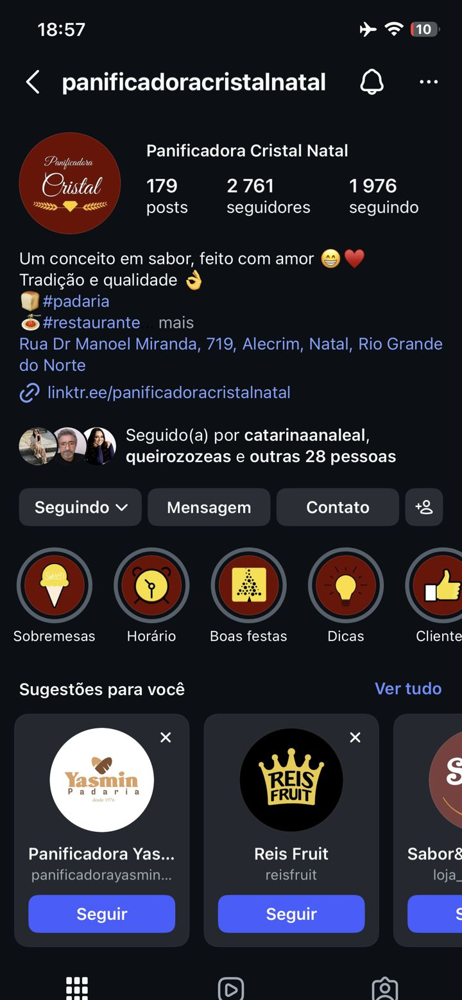
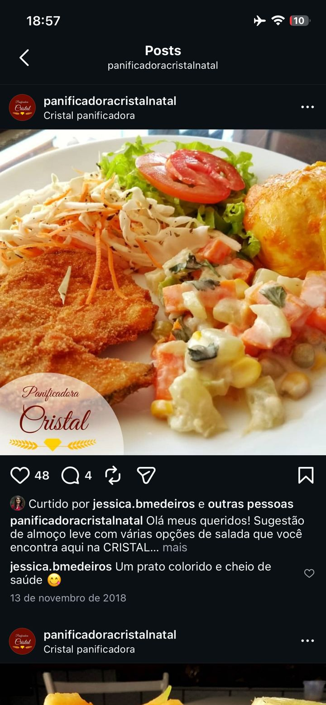
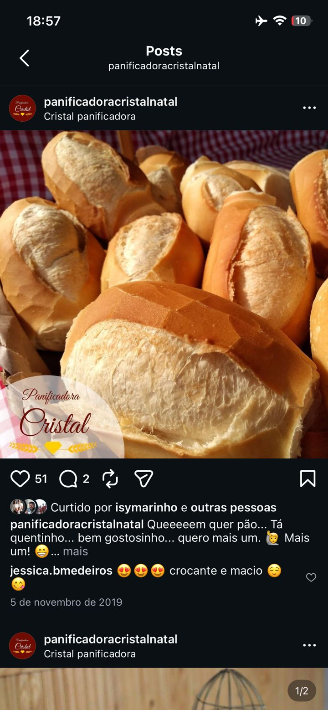
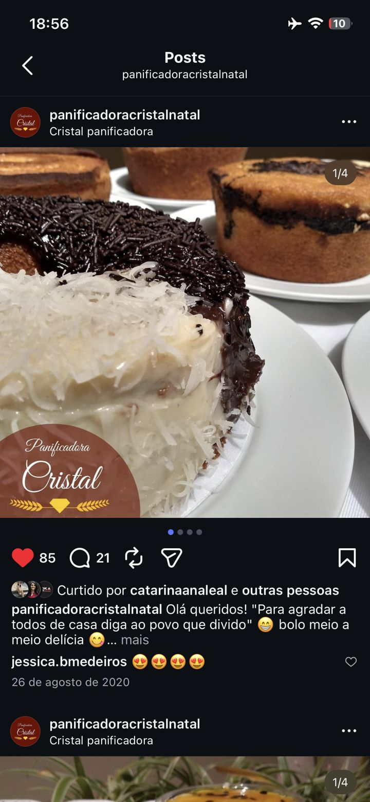

1 · Resumo executivo
Tradição forte, casa digital ainda por construir
A Panificadora Cristal, na Rua Dr. Manoel Miranda, 719, em Natal/RN, tem presença física consolidada e uma ficha no Google com 4,5 estrelas e 858 avaliações. A pesquisa não identificou um site institucional próprio claramente associado à empresa: os resultados encontrados são principalmente diretórios empresariais e páginas de terceiros.
Isso cria uma oportunidade comercial clara: um site moderno pode concentrar informações, cardápio, localização, horários, contato e pedidos em um único endereço digital, reduzindo a dependência de diretórios e redes sociais.
2 · Presença digital encontrada
Onde a Cristal aparece hoje
Tabela do PDF de análise, atualizada com o que os prints do Instagram confirmam.
| Canal / presença | Situação encontrada | Status |
|---|---|---|
| Google / Maps | Perfil encontrado; 4,5 estrelas e 858 avaliações. | Ativo |
| Site próprio | Não foi identificado um domínio institucional próprio nos resultados pesquisados. | Ausente |
| Diretórios | Presença em Guia Fácil, Telepesquisa, Solutudo, Cylex e outros diretórios. | Ativo |
| Telefone | (84) 3213-3695 aparece associado à empresa. | Encontrado |
| Endereço | Rua Dr. Manoel Miranda, 719, Natal/RN, CEP 59037-250. O Instagram confirma o bairro: Alecrim. | Confirmado |
| O PDF não conseguiu confirmar um perfil oficial. Os prints confirmam: @panificadoracristalnatal, com logotipo, endereço e link na bio. | Confirmado | |
| Linktree | linktr.ee/panificadoracristalnatal, na bio do Instagram. Hoje é o único “endereço” próprio da marca. | Encontrado |
| Não foi possível confirmar um perfil oficial inequívoco. | A confirmar |
3 · Auditoria do Instagram
@panificadoracristalnatal
Leitura dos quatro prints enviados (perfil e três publicações). Complementa o PDF, que não havia localizado o perfil.
Perfil
- Nome: Panificadora Cristal Natal.
- Bio: “Um conceito em sabor, feito com amor 😁❤️ · Tradição e qualidade 👌 · 🍞 #padaria · 🍝 #restaurante”. A bio posiciona a empresa como padaria e restaurante, e o site deve refletir isso com uma seção de almoço.
- Endereço na bio: Rua Dr Manoel Miranda, 719, Alecrim, Natal, Rio Grande do Norte.
- Link na bio: linktr.ee/panificadoracristalnatal. O site próprio pode substituir o Linktree como destino principal.
- Destaques: Sobremesas, Horário, Boas festas, Dicas, Clientes. Viraram atalhos na seção “Sobre nós” do protótipo.
- Identidade visual: logotipo circular vinho com “Panificadora Cristal” em letra cursiva, diamante dourado e ramos de trigo. As fotos levam marca-d’água com o logotipo. O protótipo usa essa paleta (vinho + ouro).
Publicações analisadas
| Data | Produto | Legenda (trecho) | Curtidas | Comentários | Interação* |
|---|---|---|---|---|---|
| 13/11/2018 | Almoço (filé empanado e saladas) | “Sugestão de almoço leve com várias opções de salada…” | 48 | 4 | 1,9% |
| 05/11/2019 | Pão francês | “Queeeeem quer pão… Tá quentinho… bem gostosinho…” | 51 | 2 | 1,9% |
| 26/08/2020 | Bolo meio a meio (carrossel, 4 fotos) | “Para agradar a todos de casa diga ao povo que divido” | 85 | 21 | 3,8% |
* (curtidas + comentários) ÷ 2.761 seguidores atuais. É uma aproximação: o número de seguidores na data de cada publicação não aparece nos prints.
O que os dados mostram
- Legenda conversacional rende mais. O post do bolo, com uma frase de efeito e carrossel, teve 5 a 10 vezes mais comentários que os outros dois. Vale repetir o formato e levar o mesmo tom para o site: o título “Queeeeem quer pão?” vem da própria legenda da Cristal.
- Os comentários são elogios ao produto (“crocante e macio”, “um prato colorido e cheio de saúde”). No protótipo, eles aparecem como depoimentos, sem identificar quem comentou.
- Seguindo alto em relação a seguidores (72%). Sugere crescimento por “seguir de volta”. Um site com SEO local traz público novo que já procura padaria na região.
- Frequência de postagem a verificar. Os prints mostram publicações de 2018 a 2020; é preciso checar a cadência atual antes de usar o Instagram como principal canal do site.
- Concorrência sugerida pelo próprio Instagram: Panificadora Yasmin (desde 1976), Reis Fruit e um terceiro perfil “Sabor&…” (nome cortado no print). São referências para comparar presença digital na proposta.
4 · Oportunidades para um novo site
O que o site precisa entregar
| Oportunidade (PDF) | Como o protótipo atende |
|---|---|
| Página inicial com fotos reais dos produtos e chamada direta para pedidos/WhatsApp. | Hero com a foto do pão francês e botões “Fazer encomenda” e “Ver cardápio”. |
| Cardápio por categorias: pães, salgados, bolos, doces, lanches, bebidas e encomendas. | Cardápio em abas (Pães, Bolos, Doces e sobremesas, Salgados e lanches, Almoço, Bebidas), navegável por teclado. |
| Botões de ação visíveis: Pedir agora, WhatsApp, Como chegar e Ver cardápio. | Botões no topo, nas seções e em uma barra fixa no celular (Ligar · Encomendar · Como chegar). |
| Google Maps incorporado e horários atualizados. | Mapa incorporado na seção Contato. Horário aponta para o destaque “Horário” do Instagram até ser confirmado. |
| Área de encomendas para bolos, salgados e produtos para eventos. | Formulário que monta a mensagem do pedido. Abre o WhatsApp assim que o número for configurado; até lá, copia o pedido e oferece a ligação. |
| Galeria de fotos profissional. | Galeria com as fotos do Instagram da Cristal e link para o perfil. Recomenda-se sessão de fotos profissional. |
| Site responsivo, pensado primeiro para celular. | Layout responsivo com menu e barra de ações para celular. |
| SEO local (“padaria no Alecrim”, “panificadora em Natal”). | Título, descrição e dados estruturados Bakery (schema.org) com endereço, telefone e nota do Google. |
5 · Estrutura sugerida do site premium
Páginas e conteúdo
| Página | Conteúdo principal | No protótipo |
|---|---|---|
| Início | Marca, produtos em destaque, CTA para pedido, localização e avaliações. | Início |
| Cardápio | Categorias, fotos, descrições e preços quando aplicável. | Cardápio + Almoço |
| Encomendas | Bolos, salgados, kits, eventos e formulário/WhatsApp. | Encomendas |
| Sobre nós | História da Panificadora Cristal e tradição em Natal. | Sobre nós + Avaliações |
| Contato | WhatsApp, telefone, endereço, horários e mapa. | Contato |
| Galeria | Fotos de produtos, loja e bastidores. | Galeria |
6 · Argumento comercial
Como apresentar ao cliente
A proposta não deve ser apresentada apenas como “criação de um site”. O argumento mais forte é centralizar a presença digital da Panificadora Cristal em uma página própria, facilitar pedidos pelo celular e transformar as buscas no Google em uma experiência mais completa para o cliente.
“A Panificadora Cristal já tem tradição e avaliações no Google. O próximo passo é ter uma casa própria na internet, com cardápio, encomendas, localização e contato em um único lugar.”
7 · Pontos que precisam ser confirmados
Antes da proposta final
| Item | Situação | Status |
|---|---|---|
| Instagram oficial | @panificadoracristalnatal, confirmado pelos prints. | Confirmado |
| Facebook oficial | Não localizado. | Pendente |
| WhatsApp comercial | Não localizado. Pode estar no Linktree; configurar em data-whatsapp no formulário. | Pendente |
| Cardápio e preços | Pão francês, bolo meio a meio e almoço com saladas confirmados pelo Instagram; o restante é estrutura sugerida. | Parcial |
| Fotos autorizadas | O protótipo usa fotos publicadas pela própria Cristal. Pedir autorização e, de preferência, arquivos originais. | Parcial |
| Encomendas e/ou delivery | Tipos de encomenda aceitos e se há entrega. | Pendente |
| Horários, inclusive domingo | Existe o destaque “Horário” no Instagram; transcrever para o site. | Parcial |
| Identidade visual, logotipo e cores | Logo e cores identificados no perfil; faltam os arquivos em alta resolução. | Parcial |
8 · Fontes consultadas
De onde vêm os dados
- PDF “Análise de Presença Digital — Panificadora Cristal, Natal/RN”Pesquisa de 27/09/2026. Abrir o PDF.
- Google / Business listingNota 4,5 e 858 avaliações.
- Guia Fácil · Telepesquisa · Solutudo · CylexDiretórios empresariais com endereço e telefone.
- Mais CNPJ / EfirmaDados cadastrais, cruzados com os diretórios.
- Documentos de rede credenciadaConfirmação de endereço.
- Instagram @panificadoracristalnatalQuatro prints de 27/09/2026 (18h56–18h57): perfil e publicações de 2018, 2019 e 2020. Imagens abaixo.
Prints do Instagram



